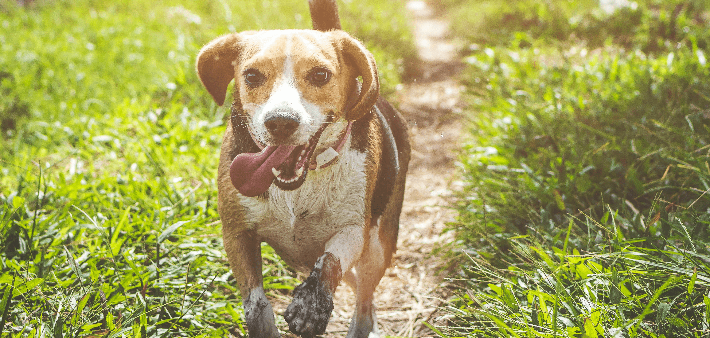
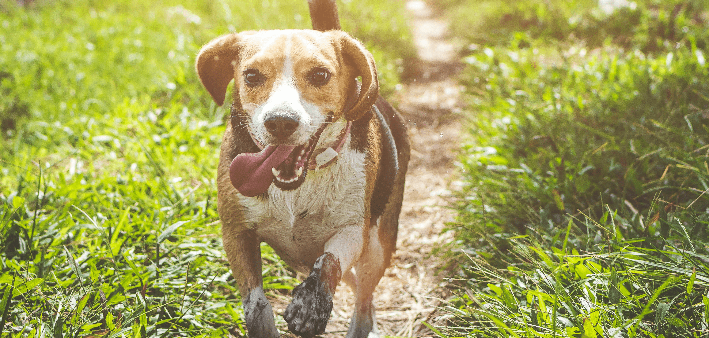

Häufig gestellte Fragen
Allgemein
-
Auch an geschlossenen Tagen, Samstag und Sonntag, werden die Hunde betreut.
-
Ehrlichkeit und Pünktlichkeit ist uns sehr wichtig. Bei Verspätung oder Frühzeitigem holen bitte sogleich Bescheid geben.
-
Kleiner Tipp: Bevor Sie Ihren Urlaub buchen wäre es ratsam zuerst einen Hundepensionsplatz zu sichern.
-
Besichtigungen: Spontane Besichtigungen sind generell nicht möglich. Wenn Sie Interesse an unserer Hundepension haben, können Sie gerne auf Google, unserer Website, auf Instagram, Facebook oder YouTube vorbeischauen, diese werden regelmäßig auf dem laufendem gehalten. Wir bitten um Verständnis, da wir eine sehr hohe Nachfrage haben, und zu Besichtigungszeiten keine Hunde aufnehmen, wird es in zukünftiger Sicht keine Besichtigungstermine mehr geben.
-
Probetage: Da wir reine Rudelhaltung haben, ist bei uns ein Probetag inklusive Übernachtung Pflicht. Dort schauen wir ob sich Ihr Hund ins Rudel integrieren lässt, wie er sich im Gruppenalltag verhält und natürlich auch ob er nachts mit den anderen Hunden gemeinsam zur Ruhe kommt. (kostenpflichtig)
-
Neukunden und Probetage: Können von ca. Mai bis ca. Oktober nicht aufgenommen werden, sollten sie dennoch zukünftig eine Betreuung brauchen, können sie sich gerne jederzeit melden.
-
Hormonchip: Rüden mit einem Chipimplantat gelten bei uns als unkastriert.
Hundepensionsanalge
Grundsätzlich nein. Jedoch ist es in der Natur schwer zu vermeiden.
Die Hunde sind großteils draußen, doch verbunden mit Ruhephasen im Innenbereich.
Generell schläft kein Hund draußen.
Das ganze Areal wird jährlich amtstierärztlich überprüft und ist zusätzlich videoüberwacht.
Unter Absprache.
Betreuung
Wir nehmen nur so viele Hunde auf, so dass sich auch jeder Einzelne wohl fühlt. Das Wohl des Hundes steht bei uns an erster Stelle.
Bitte nur das Futter mitbringen (Futterumstellung = Durchfall = Verdauungstrakt Störungen). Decken, Näpfe und Spielsachen sind genügend vorhanden.
Genauso wie der Hundebesitzer wünscht.
Unsere Hundegäste genießen den Aufenthalt auf großflächigen Hundewiesen ohne Halsband und Leine. So können sie uneingeschränkt spielen und toben.
Es wird sofort gehandelt, wenn nötig tierärztlich behandelt und der Besitzer wird natürlich sofort verständigt.
Mein Hund ist...
Kein Problem – das Alter wird berücksichtigt sowie die Medizinvergabe.
Wir richten uns immer ganz nach den Bedürfnissen des Welpen bzw. Hundes.
Jedem Hund wird das gefüttert, was ihm mitgegeben wird.
Eine Betreuung ist nicht ausgeschlossen, muss jedoch ehrlich mit uns abgesprochen werden.
Sobald er unter Artgenossen ist, ist Heimweh meist kein Thema mehr. Die Wiedersehensfreude bleibt natürlich bestehen.
Aus Erfahrung wissen wir, dass sich solche Hunde meist schnell öffnen.
Mahlzeiten werden getrennt und gezielt verabreicht.
Qualität vor Quantität – wir nehmen nur so viele Hunde auf, wie wir verantwortungsvoll betreuen können.
Sonstiges
Die Angaben sind verständlich. Bei Unsicherheiten gerne bei Nina unter der Firmennummer melden – dort gibt es auch das Formular. Bitte beantworten Sie alles ehrlich.
Die Preisliste finden Sie auf unserer Website unter der Rubrik „Preise“.
Die aktuellen Öffnungszeiten finden Sie auf unserer Website.
Nach Absprache möglich.
Nein.
Wir sind ein Familienbetrieb. Michael und Luna betreuen die Hunde. Nina ist für Telefonate, Terminvergabe und Büroarbeit zuständig.
Nein.
Ja, bei Neuzugängen wünschen wir uns einen Probetag inklusive Übernachtung vorab.
Einfach anfragen – wenn möglich, gerne.
Das ausgefüllte Anmeldeformular, den Impfpass und das Futter.
Nur mit Absprache und nur während der Öffnungszeiten.
Nur in Notfällen.
Debitkarte, Kreditkarte oder Barzahlung sind möglich.
Bitte am Hofplatz beim Auto warten, bis jemand kommt. Die Übergabe erfolgt dort. Bitte nicht über das Gelände laufen – der Platz ist videoüberwacht.
IMPRESSUM | DATENSCHUTZ | COPYRIGHT | AGBs